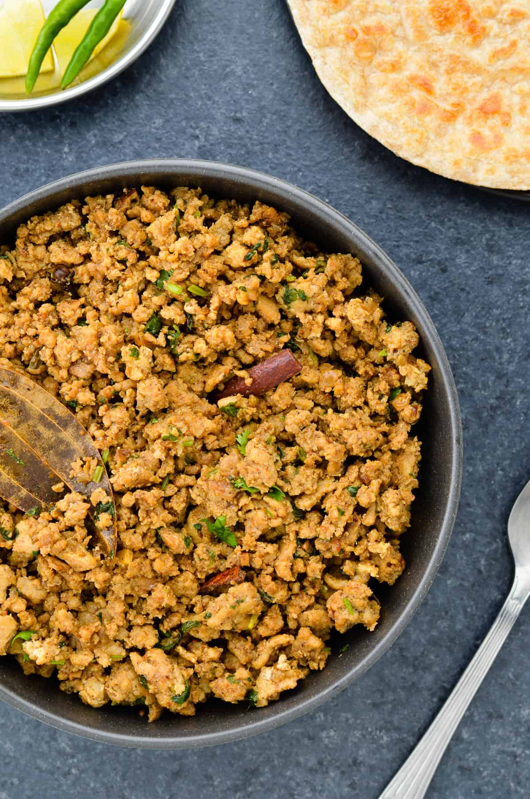
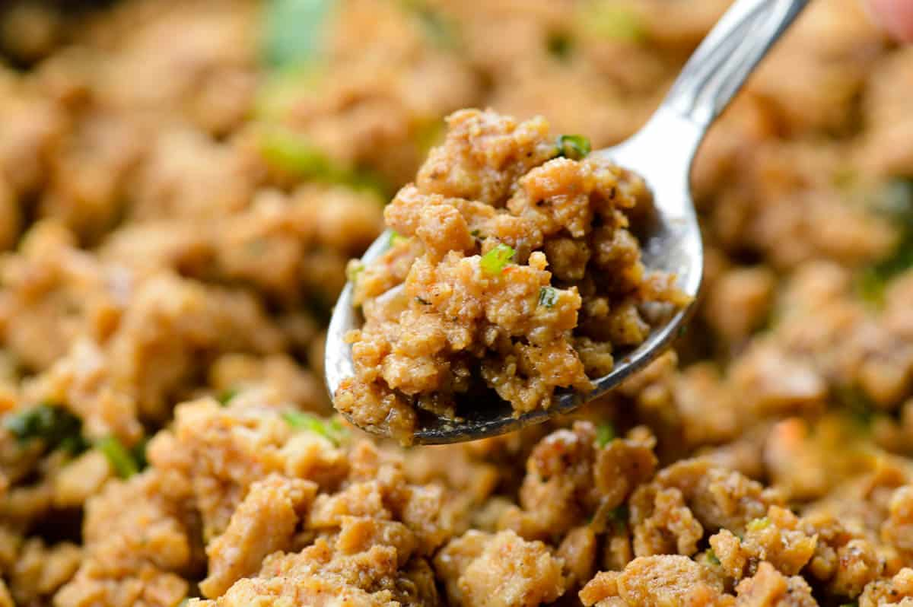
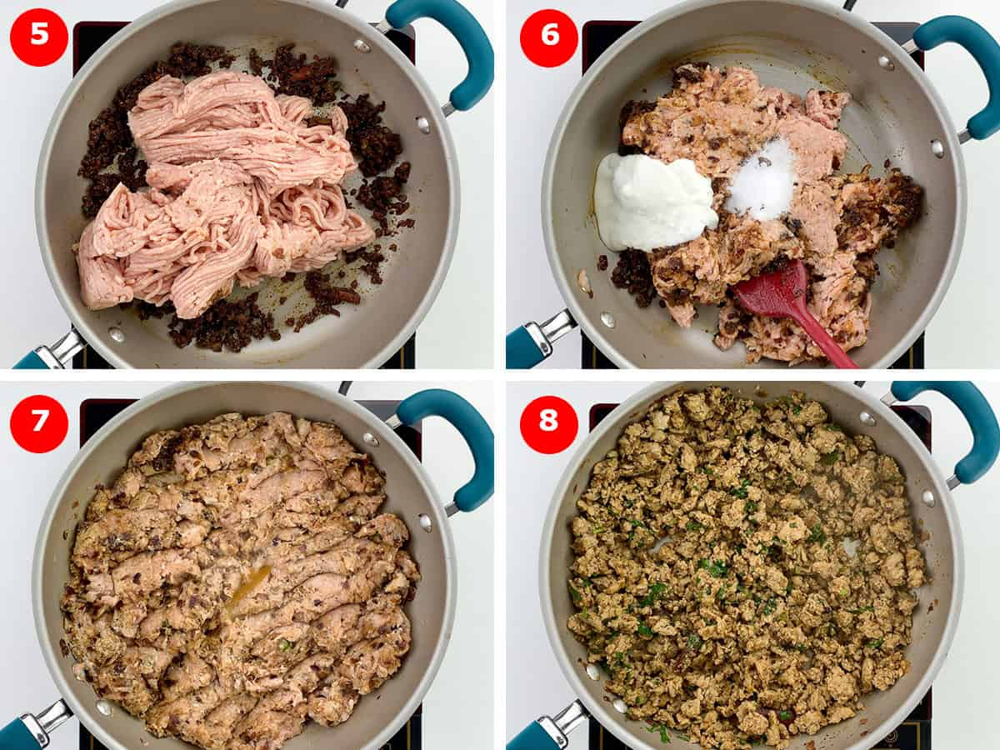
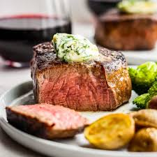

Double Chocolate Cookies
Origin: Michigan Source: Family Recipe Category: Dessert
My daughter learned to make these cookies at a baking camp at Zingermanns and has tweaked the recipe to fit the taste buds of her siblings. They are extremely sugary so the salt helps to balance it. Note, these cookies are best eaten very quickly.
Recipe Ingredients
- Unsalted butter
- Granulated Sugar
- Packed light or dark brown sugar
- Large egg
- Pure vanilla extract
- Semi-sweet chocolate chunks (melted)
- All-purpose flour
- Natural unsweetened cocoa powder
- Baking soda
- Salt
- Semi-sweet chocolate chunks
Recipe Steps
- In a mixing bowl cream together the butter, granulated sugar, and brown sugar
- Add the egg and vanilla extract and beat well
- Add the melted chocolate
- In a separate bowl combine the flour, baking soda, cocoa powder and salt
- Combine the wet and dry ingredients
- Add the unmelted chocolate chunks.
- Form 15 cookies and place on a baking sheet.
- Cook for 12 to 13 minutes at 350 degrees.
Additional Food images


Chicken Qeema
Origin: Pakistan Source: Family Recipe Category: Main Course A dish dear to me. An example of Pakistani comfort food.
Recipe Ingredients
- Chicken mince
- Oil
- Whole Spices or Garam Masala
- chopped ginger
- garlic
- green chilli
- onions
- pice powders for flavoring
- salt
- yogurt
- chopped coriander leaves
Recipe Steps
- In a wide bottomed pan, lightly heat up 4 tablespoon oil, and add in whole garam spices (1 bay leaf, 1 inch cinnamon stick, 7 cloves, 7 black peppercorns), and lightly roast for 1-2 minutes, till they start giving off a slight fragrance.
- Then add in 2 tablespoon chopped garlic & 1 tablespoon chopped ginger, and roast for 1-2 minutes, till they start getting light reddish in color.
- Now add 2 cups of chopped onions, 1 teaspoon of salt to brown the onions faster, and 2 chopped green chillies. Saute till the onions turn light golden brown. This might take about 10 minutes in a wide pan.
- When the onions are done, add in the masalas – (1 tablespoon garam masala powder, 1 tablespoon coriander powder, 1 teaspoon cumin powder, 1 teaspoon black pepper powder, 1 teaspoon chilli powder). Mix well, and saute for 1-2 minutes, till the masalas get lightly cooked. Here it’s best to sprinkle a few spoons of water if required, to avoid the masalas from burning.
- Now add in 2 pounds of chicken mince, along with ¼ cup yogurt, the rest of the salt (1 teaspoon), and mix well.
- Cook covered for 20-25 minutes on medium flame, stirring intermittently, till the chicken is cooked through.
- Garnish with ½ cup chopped coriander leaves, and serve hot with rotis.
Additional Food images
 Beef Steak
Origin: United States Source: Family Recipe Category: Main Course A perfectly grilled steak, seared to caramelized perfection, offers a savory symphony of flavors and a mouthwatering tenderness that's pure carnivorous delight.
Recipe Ingredients
- Coarse salt
- Ribeye
- Black Pepper
- Garlic powder
- Rosemary
- Butter
- Thyme
Recipe Steps
- Remove packaging and pat meat dry with paper towels. Line a plate with paper towels, place meat on top and set aside to dry further and come to cool room temperature (30 to 60 minutes, depending on the weather). Turn occasionally; replace paper towels as needed.
- Place a heavy skillet, preferably cast-iron, on the stove and sprinkle lightly but evenly with about ¼ to ½ teaspoon salt. Turn heat to high under pan. Pat both sides of steak dry again.
- When pan is smoking hot, 5 to 8 minutes, pat steak dry again and place in pan. (If using two steaks, cook in two batches.)
- When steak has contracted in size and developed a dark-brown crust, about 4 minutes total, check for doneness. To the touch, meat should feel softly springy but not squishy. If using an instant-read thermometer, insert into side of steak. For medium-rare meat, 120 to 125 degrees is ideal: Steak will continue cooking after being removed from heat.
- Remove steak to a cutting board and tent lightly with foil. Let rest 5 minutes.
- Serve in pieces or thickly slice on the diagonal, cutting away from your body and with the top edge of the knife leaning toward your body. If cooking skirt or hanger steak, make sure to slice across the grain of the meat. Serve with butter, thyme and rosemary.